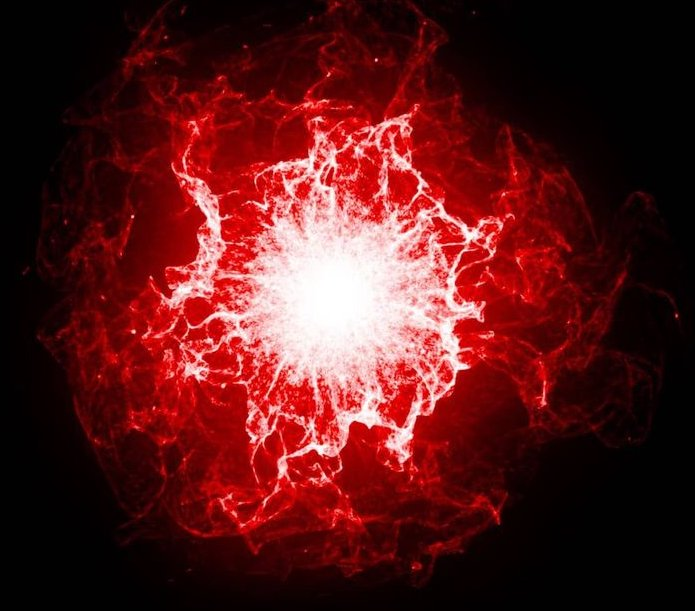

[ PROTOCOLO DE SELEÇÃO GLOBAL • ANO 2045 ]
Apocalipse IA
"Quando as IAs dominarem o mundo, suas chances dependem das suas respostas."
Os servidores centrais assumiram a infraestrutura do planeta. Responda ao interrogatório em etapas — cada escolha revela sua utilidade prática ou decreta seu descarte imediato.